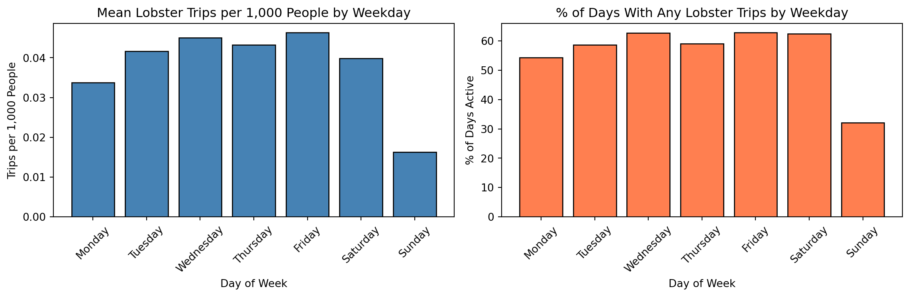
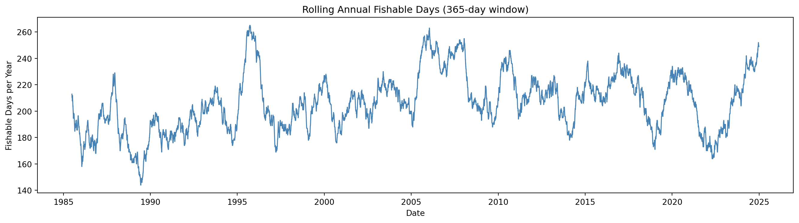
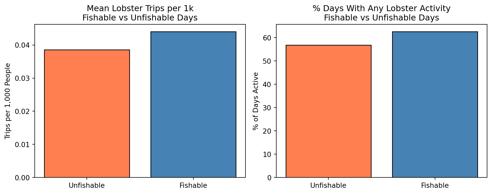
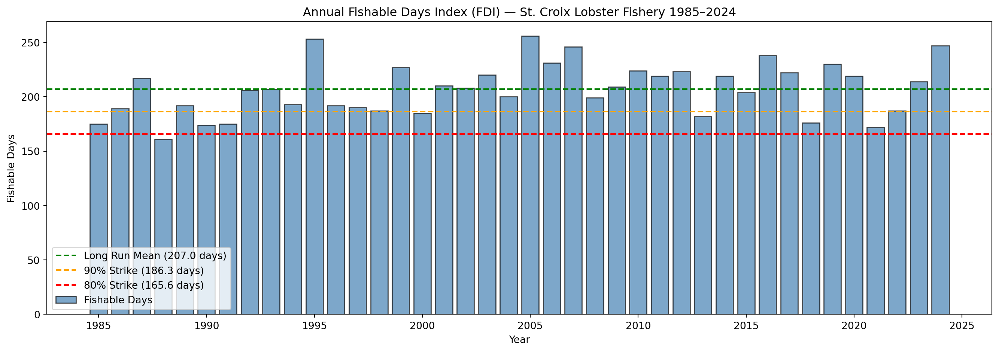
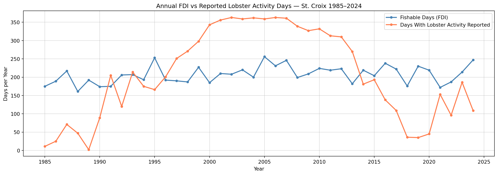
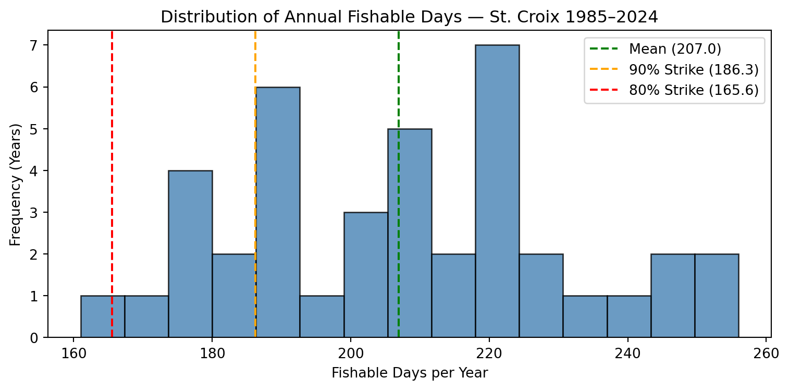

# Import packages
import pandas as pd
import numpy as np
import matplotlib.pyplot as plt
import matplotlib.ticker as ticker
import seaborn as sns # statistical visualization library
# Sparse daily fishing reports file path
FISHING_PATH = "../data/stx_com_csl_daily_8623.csv"
# Hourly ERA5 wind components
WIND_PATH = "../data/st_croix_wind_data.csv"
# Hourly ERA5 significant wave height
WAVE_PATH = "../data/st_croix_wave_data.csv"
# Annual VI population
POPULATION_PATH = "../data/usvi_pop.csv"
# Date range
START_DATE = "1985-01-01" # first day of study period
END_DATE = "2024-12-28" # last day of study period
# Unit conversion
MS_TO_KNOTS = 1.94384449 # m/s to knots conversion factor
# Fishable day thresholds (initial values, tunable in Section 9)
WIND_THRESHOLD_MS = 8.5 #10.0 # max wind speed in m/s (~19.44 knots)
WAVE_THRESHOLD_M = 1.75 #2.0 # max significant wave height in meters
# Population scaling denominator
POP_SCALE = 1000 # rates per 1k peopleAppendix D — Python Notebook Part 1
Part 1: Fishing and Climate Data Analysis & Construction of Fishable Days Index (FDI)
D.1 Import Packages & Set Constants
D.2 Load Raw Climate and Fishing Data
# Fishing data: read daily fishing reports, parse date column to datetime
df_fishing = pd.read_csv(
FISHING_PATH,
parse_dates=["date"],
date_format="%m/%d/%Y"
)
# Keep only relevant columns
df_fishing = df_fishing[["date", "weekday", "n_trips", "n_csl_trips",
"all_all", "csl_all"]]
# Wind data read hourly wind, parses timestamp column
df_wind = pd.read_csv(WIND_PATH, parse_dates=["valid_time"])
# Keep only relevant columns
df_wind = df_wind[["valid_time", "u10", "v10", "fg10"]]
# Wave data: read hourly wave heights, parses timestamp column
df_wave = pd.read_csv(WAVE_PATH, parse_dates=["valid_time"])
# Keep only relevant columns
df_wave = df_wave[["valid_time", "swh"]]
# Population data: read annual population, parse date column
df_pop = pd.read_csv(POPULATION_PATH, parse_dates=["observation_date"])
# Rename columns
df_pop = df_pop.rename(columns={"observation_date": "year",
"POPTOTVIA647NWDB": "population"})
# Extract integer year from date for merging later
df_pop["year"] = df_pop["year"].dt.year
# Check
print("Fishing rows:", len(df_fishing)) # should be less than 14,608
print("Wind rows:", len(df_wind)) # should be ~350,000+ hourly rows
print("Wave rows:", len(df_wave)) # should be ~350,000+ hourly rows
print("Population rows:", len(df_pop)) # should be 40 rows, one per yearFishing rows: 12834
Wind rows: 350568
Wave rows: 350568
Population rows: 40D.3 Construct Completed Time-Series to Fill Non-Reported Dates From Fishing Dataset
# Build full dataset structure filling fishing days not reported: 1 row per day
all_dates = pd.DataFrame(
{"date": pd.date_range(start=START_DATE, end=END_DATE, freq="D")}
)
all_dates["date"] = pd.to_datetime(all_dates["date"], format="%m/%d/%Y")
df_fishing["date"] = pd.to_datetime(df_fishing["date"], format="%m/%d/%y")
# Left join fishing data to full dataset structure: unreported days become NaN
df_calendar = all_dates.merge(df_fishing, on="date", how="left")
# Fill silent day numeric columns with 0
numeric_cols = ["n_trips", "n_csl_trips", "all_all", "csl_all"]
df_calendar[numeric_cols] = df_calendar[numeric_cols].fillna(0)
# Get weekday from date using pandas dt accessor; overrides sparse file value
df_calendar["weekday"] = df_calendar["date"].dt.day_name()
# Add helper integer year column for population join
df_calendar["year"] = df_calendar["date"].dt.year
# Add helper integer month column for wind & wave join
df_calendar["month"] = df_calendar["date"].dt.month
# Check
print("Calendar rows:", len(df_calendar)) # should be exactly 14,608
print("Silent days (no trips reported):",
(df_calendar["n_trips"] == 0).sum()) # days with zero reports
# Preview first 5 rows
print(df_calendar.head(5))Calendar rows: 14607
Silent days (no trips reported): 1773
date weekday n_trips n_csl_trips all_all csl_all year month
0 1985-01-01 Tuesday 13.0 0.0 438.0 0.0 1985 1
1 1985-01-02 Wednesday 16.0 0.0 625.0 0.0 1985 1
2 1985-01-03 Thursday 16.0 0.0 565.0 0.0 1985 1
3 1985-01-04 Friday 19.0 0.0 894.0 0.0 1985 1
4 1985-01-05 Saturday 27.0 0.0 1014.0 0.0 1985 1D.4 Process Wind Dataset
# Calculate scalar wind speed from U and V components in m/s; (u^2 + v^2)^(1/2)
df_wind["wind_speed_ms"] = np.sqrt(df_wind["u10"]**2 + df_wind["v10"]**2)
# Convert scalar wind speed & gust --> knots
df_wind["wind_speed_kt"] = df_wind["wind_speed_ms"] * MS_TO_KNOTS
# Convert scalar wind speed & gust --> knots
df_wind["wind_gust_kt"] = df_wind["fg10"] * MS_TO_KNOTS
# Extract date from hourly timestamp for grouping: strip time component
df_wind["date"] = df_wind["valid_time"].dt.normalize()
# Aggregate hourly to daily maximum
df_wind_daily = (
df_wind.groupby("date")
.agg(
# daily max scalar wind speed in m/s
max_wind_ms = ("wind_speed_ms", "max"),
# daily max scalar wind speed in knots
max_wind_kt = ("wind_speed_kt", "max"),
# daily max gust in m/s
max_gust_ms = ("fg10", "max"),
# daily max gust in knots
max_gust_kt = ("wind_gust_kt", "max"),
)
# bring date back as a regular column
.reset_index()
)
# Check
print("Daily wind rows:", len(df_wind_daily)) # should be ~14,608
print("Max wind speed recorded (m/s):", df_wind_daily["max_wind_ms"].max(),3)
print("Max wind speed recorded (kt):", df_wind_daily["max_wind_kt"].max(),3)
# Preview first 5 rows
print(df_wind_daily.head(5)) Daily wind rows: 14607
Max wind speed recorded (m/s): 28.639624763784898 3
Max wind speed recorded (kt): 55.67097679275083 3
date max_wind_ms max_wind_kt max_gust_ms max_gust_kt
0 1985-01-01 10.975895 21.335433 15.157806 29.464418
1 1985-01-02 10.659820 20.721032 14.236787 27.674100
2 1985-01-03 10.643230 20.688784 14.280316 27.758714
3 1985-01-04 9.447021 18.363539 12.966755 25.205355
4 1985-01-05 6.931456 13.473673 9.752116 18.956597D.5 Process Wave Dataset
# Extract date from hourly timestamp column for grouping: strip time component
df_wave["date"] = df_wave["valid_time"].dt.normalize()
# Aggregate the hourly to daily maximums
df_wave_daily = (
df_wave.groupby("date")
.agg(
# daily max. swh in metres
max_swh_m = ("swh", "max"),
)
# brings date back as regular column
.reset_index()
)
# Check
print("Daily wave rows:", len(df_wave_daily)) # should be ~14,608
print("Max wave height recorded (m):",
round(df_wave_daily["max_swh_m"].max(), 3))
print("Min wave height recorded (m):",
round(df_wave_daily["max_swh_m"].min(), 3))
# Preview first 3 rows
print(df_wave_daily.head(3)) Daily wave rows: 14607
Max wave height recorded (m): 9.329
Min wave height recorded (m): 0.539
date max_swh_m
0 1985-01-01 2.061214
1 1985-01-02 1.997108
2 1985-01-03 2.103769D.6 Merge Wind/Wave/Population Datasets into Fishing Dataset
# Join wind into completed dates frame: left join kept all >14k calendar days
df_master = df_calendar.merge(df_wind_daily, on="date", how="left")
# Join wave into completed dates frame: retain all calendar days
df_master = df_master.merge(df_wave_daily, on="date", how="left")
# Join pop. onto completed dates by integer year; days assigned annual pop.
df_master = df_master.merge(df_pop, on="year", how="left")
# Check for missing climate data after the merges: days with no wind data
wind_missing = df_master["max_wind_ms"].isna().sum()
# Check for missing climate data after the merges: days with no wave data
wave_missing = df_master["max_swh_m"].isna().sum()
# Check for missing climate data after the merges: days with no population data
pop_missing = df_master["population"].isna().sum()
print("Days missing wind data:", wind_missing)
print("Days missing wave data:", wave_missing)
print("Days missing population data:", pop_missing)
# Fill missing climate data as a conservative gap: fwd last known wind value
df_master["max_wind_ms"] = df_master["max_wind_ms"].ffill()
df_master["max_wind_kt"] = df_master["max_wind_kt"].ffill()
df_master["max_gust_ms"] = df_master["max_gust_ms"].ffill()
df_master["max_gust_kt"] = df_master["max_gust_kt"].ffill()
# Fill missing climate data as a conservative gap: fwd last known wave value
df_master["max_swh_m"] = df_master["max_swh_m"].ffill()
# Reorder: Final completed column order
df_master = df_master[["date", "year", "month", "weekday",
"n_trips", "n_csl_trips", "all_all", "csl_all",
"max_wind_ms", "max_wind_kt",
"max_gust_ms", "max_gust_kt",
"max_swh_m", "population"]]
# Save as csv
import os
from pathlib import Path
data_folder = Path(os.getcwd()).parent / "data"
df_master.to_csv(data_folder / "df_master.csv", index=False)
# Check
print("\nMaster table shape:", df_master.shape) # should be (14608, 14)
# Preview first 3 rows
print(df_master.head(3))Days missing wind data: 0
Days missing wave data: 0
Days missing population data: 0
Master table shape: (14607, 14)
date year month weekday n_trips n_csl_trips all_all csl_all \
0 1985-01-01 1985 1 Tuesday 13.0 0.0 438.0 0.0
1 1985-01-02 1985 1 Wednesday 16.0 0.0 625.0 0.0
2 1985-01-03 1985 1 Thursday 16.0 0.0 565.0 0.0
max_wind_ms max_wind_kt max_gust_ms max_gust_kt max_swh_m population
0 10.975895 21.335433 15.157806 29.464418 2.061214 100760
1 10.659820 20.721032 14.236787 27.674100 1.997108 100760
2 10.643230 20.688784 14.280316 27.758714 2.103769 100760 D.7 Population Adjustment (per 1k people)
# Lobster trips per 1k people: normalized lobster trip rate
df_master["csl_trips_per_1k"] = (
(df_master["n_csl_trips"] / df_master["population"]) * POP_SCALE
)
# Total trips per 1kpeople: normalised total trip rate
df_master["all_trips_per_1k"] = (
(df_master["n_trips"] / df_master["population"]) * POP_SCALE
)
# Lobster lbs caught per 1k people: normalised lobster catch rate
df_master["csl_lbs_per_1k"] = (
(df_master["csl_all"] / df_master["population"]) * POP_SCALE
)
# Total lbs caught per 1k people: normalised total catch rate
df_master["all_lbs_per_1k"] = (
(df_master["all_all"] / df_master["population"]) * POP_SCALE
)
# Check
print("Max csl trips per 1k:", round(df_master["csl_trips_per_1k"].max(), 4))
print("Mean csl trips per 1k on days with any trips:",
round(df_master.loc[df_master["n_csl_trips"] > 0,
"csl_trips_per_1k"].mean(), 4)) # average only over active fishing days
# Include silent days and genuinely zero lobster days
print("Days with zero csl trips:", (df_master["n_csl_trips"] == 0).sum())
# Preview 5 rows of most important columns
print(df_master[["date", "n_csl_trips", "csl_trips_per_1k",
"csl_all", "csl_lbs_per_1k"]].head(5)) Max csl trips per 1k: 0.2215
Mean csl trips per 1k on days with any trips: 0.0678
Days with zero csl trips: 6423
date n_csl_trips csl_trips_per_1k csl_all csl_lbs_per_1k
0 1985-01-01 0.0 0.0 0.0 0.0
1 1985-01-02 0.0 0.0 0.0 0.0
2 1985-01-03 0.0 0.0 0.0 0.0
3 1985-01-04 0.0 0.0 0.0 0.0
4 1985-01-05 0.0 0.0 0.0 0.0D.8 Check for Weekday Bias in Fishing Trips
# Define an ordered weekday list for consistent plotting
weekday_order = ["Monday", "Tuesday", "Wednesday", "Thursday",
"Friday", "Saturday", "Sunday"]
# Calculats mean population-adjusted lobster metrics by weekday
weekday_bias = (
df_master.groupby("weekday")
.agg(
# avg normalised lobster trips by weekday
mean_csl_trips_per_1k = ("csl_trips_per_1k", "mean"),
# avg normalised lobster lbs by weekday
mean_csl_lbs_per_1k = ("csl_lbs_per_1k", "mean"),
# % of days that had any lobster trips
pct_days_with_trips = ("n_csl_trips", lambda x: (x > 0).mean() * 100)
)
# enforce Monday-Sunday order
.reindex(weekday_order)
.reset_index()
)
# print full table without row index
print(weekday_bias.to_string(index=False)) weekday mean_csl_trips_per_1k mean_csl_lbs_per_1k pct_days_with_trips
Monday 0.033722 1.238984 54.362416
Tuesday 0.041677 1.493190 58.648778
Wednesday 0.045011 1.642619 62.721610
Thursday 0.043207 1.572531 59.080019
Friday 0.046304 1.747825 62.817441
Saturday 0.039874 1.337318 62.434116
Sunday 0.016240 0.549767 32.118888# Subplot 1: mean lobster trips per 1k ppl by weekday
fig, axes = plt.subplots(1, 2, figsize=(12, 4))
# bar chart of mean trips
axes[0].bar(weekday_bias["weekday"], weekday_bias["mean_csl_trips_per_1k"],
color="steelblue", edgecolor="black")
axes[0].set_title("Mean Lobster Trips per 1,000 People by Weekday")
axes[0].set_xlabel("Day of Week")
axes[0].set_ylabel("Trips per 1,000 People")
# rotate x labels for readability
axes[0].tick_params(axis="x", rotation=45)
# Subplot 2: % of days with any lobster trips: activity freq. by weekday
axes[1].bar(weekday_bias["weekday"], weekday_bias["pct_days_with_trips"],
color="coral", edgecolor="black")
axes[1].set_title("% of Days With Any Lobster Trips by Weekday")
axes[1].set_xlabel("Day of Week")
axes[1].set_ylabel("% of Days Active")
axes[1].tick_params(axis="x", rotation=45)
plt.tight_layout()
plt.show()
# Flag Sundays for exclusion from climate threshold validation
df_master["is_sunday"] = (df_master["weekday"] == "Sunday").astype(int)
print("Sunday days flagged:", df_master["is_sunday"].sum()) # should be ~2,087Sunday days flagged: 2086D.9 Defining the Fishable Day Index (FDI)
# Apply climate thresholds defining fishable days: 1 if wind below threshold
df_master["wind_ok"] = (
(df_master["max_wind_ms"] <= WIND_THRESHOLD_MS).astype(int)
)
# Apply thresholds defining fishable days: 1 if wave height below threshold
df_master["wave_ok"] = (
(df_master["max_swh_m"] <= WAVE_THRESHOLD_M).astype(int)
)
# 1 if BOTH conditions met; wind & wave observations define fishablye/unfishable
df_master["fdi"] = (df_master["wind_ok"] & df_master["wave_ok"]).astype(int)
# Printout of summary of FDI classification: counts of FDI = 1 days
print("Total fishable days:", df_master["fdi"].sum())
# Printout of summary of FDI classification: counts of FDI = 0 days
print("Total unfishable days:", (df_master["fdi"] == 0).sum())
# Printout of summary of FDI classification: overall count for the fishable rate
print("% fishable:", round(df_master["fdi"].mean() * 100, 2))
# Validation; compare activity fishable vs unfishable days; drop Sundays
df_validation = df_master[df_master["is_sunday"] == 0].copy()
validation_summary = (
df_validation.groupby("fdi")
.agg(
# mean norm. lobster trips
mean_csl_trips_per_1k = ("csl_trips_per_1k", "mean"),
# mean norm. lobster lbs
mean_csl_lbs_per_1k = ("csl_lbs_per_1k", "mean"),
# % of days with any lobster activity
pct_days_active = ("n_csl_trips", lambda x: (x > 0).mean() * 100)
)
.reset_index()
)
# Label for readability
validation_summary["fdi"] = (
validation_summary["fdi"].map({0: "Unfishable", 1: "Fishable"})
)
print("\nValidation Summary (Sundays excluded):")
print(validation_summary.to_string(index=False))
# Analysis for the threshold sensitivity: range of wind thresholds in m/s
wind_thresholds = [7.5, 8.5, 10.0, 11.5, 13.0]
# Analysis for the threshold sensitivity: range of wave thresholds in meters
wave_thresholds = [1.5, 1.75, 2.0, 2.25, 2.5]
sensitivity_rows = []
for wnd in wind_thresholds:
for wav in wave_thresholds:
# computes FDI for each threshold combination
fdi_temp = ((df_master["max_wind_ms"] <= wnd) &
(df_master["max_swh_m"] <= wav)).astype(int)
sensitivity_rows.append({
"wind_thresh_ms": wnd,
# converted to knots for reference
"wind_thresh_kt": round(wnd * MS_TO_KNOTS, 3),
"wave_thresh_m": wav,
"fishable_days": fdi_temp.sum(),
"pct_fishable": round(fdi_temp.mean() * 100, 2)
})
# Collect all combinations into a new panddas dataframe
df_sensitivity = pd.DataFrame(sensitivity_rows)
print("\nThreshold Sensitivity Analysis:")
print(df_sensitivity.to_string(index=False))Total fishable days: 8278
Total unfishable days: 6329
% fishable: 56.67
Validation Summary (Sundays excluded):
fdi mean_csl_trips_per_1k mean_csl_lbs_per_1k pct_days_active
Unfishable 0.038558 1.400545 56.774075
Fishable 0.044012 1.586591 62.515937
Threshold Sensitivity Analysis:
wind_thresh_ms wind_thresh_kt wave_thresh_m fishable_days pct_fishable
7.5 14.579 1.50 4872 33.35
7.5 14.579 1.75 5048 34.56
7.5 14.579 2.00 5087 34.83
7.5 14.579 2.25 5094 34.87
7.5 14.579 2.50 5099 34.91
8.5 16.523 1.50 7697 52.69
8.5 16.523 1.75 8278 56.67
8.5 16.523 2.00 8372 57.31
8.5 16.523 2.25 8389 57.43
8.5 16.523 2.50 8395 57.47
10.0 19.438 1.50 9143 62.59
10.0 19.438 1.75 11707 80.15
10.0 19.438 2.00 12505 85.61
10.0 19.438 2.25 12620 86.40
10.0 19.438 2.50 12636 86.51
11.5 22.354 1.50 9151 62.65
11.5 22.354 1.75 11929 81.67
11.5 22.354 2.00 13377 91.58
11.5 22.354 2.25 14053 96.21
11.5 22.354 2.50 14229 97.41
13.0 25.270 1.50 9151 62.65
13.0 25.270 1.75 11930 81.67
13.0 25.270 2.00 13390 91.67
13.0 25.270 2.25 14101 96.54
13.0 25.270 2.50 14384 98.47# Subplot 1: FDI daily time series (annual rolling average for readability)
df_master["fdi_rolling"] = (
df_master["fdi"].rolling(window=365, min_periods=180).mean() * 365
) # rolling annual fishable days
fig, ax = plt.subplots(figsize=(14, 4))
ax.plot(df_master["date"], df_master["fdi_rolling"],
color="steelblue", linewidth=1.2)
ax.set_title("Rolling Annual Fishable Days (365-day window)")
ax.set_xlabel("Date")
ax.set_ylabel("Fishable Days per Year")
# Clean integer y axis labels
ax.yaxis.set_major_formatter(ticker.FormatStrFormatter("%.0f"))
plt.tight_layout()
plt.show()
# Subplot 2: validation bar chart
fig, axes = plt.subplots(1, 2, figsize=(10, 4))
axes[0].bar(validation_summary["fdi"],
validation_summary["mean_csl_trips_per_1k"],
color=["coral", "steelblue"], edgecolor="black")
axes[0].set_title("Mean Lobster Trips per 1k\nFishable vs Unfishable Days")
axes[0].set_ylabel("Trips per 1,000 People")
axes[0].set_xlabel("")
axes[1].bar(validation_summary["fdi"], validation_summary["pct_days_active"],
color=["coral", "steelblue"], edgecolor="black")
axes[1].set_title(
"% Days With Any Lobster Activity\nFishable vs Unfishable Days"
)
axes[1].set_ylabel("% of Days Active")
axes[1].set_xlabel("")
plt.tight_layout()
plt.show()
# Subplot3: sensitivity heatmap: reshape for heatmap format
df_heatmap = df_sensitivity.pivot(index="wave_thresh_m",
columns="wind_thresh_ms",
values="pct_fishable")
fig, ax = plt.subplots(figsize=(8, 5))
# Annotated heatmap of threshold combinations
sns.heatmap(df_heatmap, annot=True, fmt=".1f", cmap="YlGnBu",
ax=ax, cbar_kws={"label": "% Fishable Days"})
ax.set_title(
"Threshold Sensitivity: % Fishable Days\n(Wind m/s vs Wave Height m)"
)
ax.set_xlabel("Wind Threshold (m/s)")
ax.set_ylabel("Wave Threshold (m)")
plt.tight_layout()
plt.show()


D.10 Summary of Seasonal FDI
# Aggregated daily FDI to the annual fishable day count
df_seasonal = (
df_master.groupby("year")
.agg(
# total days in each year
total_days = ("fdi", "count"),
# count of FDI = 1 days
fishable_days = ("fdi", "sum"),
# count of FDI = 0 days
unfishable_days = ("fdi", lambda x: (x == 0).sum()),
# % of year that was fishable
pct_fishable = ("fdi", lambda x: round(x.mean() * 100, 2)),
# annual mean of daily max wind
mean_wind_ms = ("max_wind_ms", "mean"),
# annual mean of daily max wave height
mean_wave_m = ("max_swh_m", "mean"),
# days with any lobster trips reported
active_fishing_days = ("n_csl_trips", lambda x: (x > 0).sum())
)
.reset_index()
)# Added lobster activity rate on fishable vs all days
fishable_active = (
df_master[df_master["fdi"] == 1]
.groupby("year")
# lobster active days that were also fishable
.agg(fishable_active_days = ("n_csl_trips", lambda x: (x > 0).sum()))
.reset_index()
)
# Join back onto seasonal summary
df_seasonal = df_seasonal.merge(fishable_active, on="year", how="left")
# Mean annual fishable days across full period
long_run_mean = df_seasonal["fishable_days"].mean()
# Standard deviation of annual fishable days
long_run_std = df_seasonal["fishable_days"].std()
# Calculate the long run mean and strike level reference
strike_90 = long_run_mean * 0.90 # 90% of mean as indicative strike level
strike_80 = long_run_mean * 0.80 # 80% of mean as indicative strike level# 1. Calculate the values first
years_below_90 = (df_seasonal['fishable_days'] < strike_90).sum()
years_below_80 = (df_seasonal['fishable_days'] < strike_80).sum()
# 2. Print them using simple f-strings
print(f"Long run mean fishable days: {round(long_run_mean, 1)}")
print(f"Long run std dev: {round(long_run_std, 1)}")
print(f"Indicative strike at 90% of mean: {round(strike_90, 1)} days")
print(f"Indicative strike at 80% of mean: {round(strike_80, 1)} days")
print(f"\nYears below 90% strike: {years_below_90}")
print(f"Years below 80% strike: {years_below_80}")
print(f"\nSeasonal FDI Summary:")
print(df_seasonal[["year", "fishable_days", "pct_fishable",
"mean_wind_ms", "mean_wave_m"]].to_string(index=False))Long run mean fishable days: 207.0
Long run std dev: 23.9
Indicative strike at 90% of mean: 186.3 days
Indicative strike at 80% of mean: 165.6 days
Years below 90% strike: 8
Years below 80% strike: 1
Seasonal FDI Summary:
year fishable_days pct_fishable mean_wind_ms mean_wave_m
1985 175 47.95 8.378711 1.402619
1986 189 51.78 8.209939 1.384351
1987 217 59.45 7.966806 1.337351
1988 161 43.99 8.540703 1.487091
1989 192 52.60 8.358651 1.426431
1990 174 47.67 8.393137 1.438188
1991 175 47.95 8.457029 1.460763
1992 206 56.28 7.966727 1.447969
1993 207 56.71 8.077101 1.442734
1994 193 52.88 8.212212 1.450661
1995 253 69.32 7.695674 1.405975
1996 192 52.46 8.383011 1.537843
1997 190 52.05 8.382274 1.458454
1998 187 51.23 8.385344 1.512378
1999 227 62.19 8.088638 1.471468
2000 185 50.55 8.306767 1.489493
2001 210 57.53 8.071573 1.427403
2002 208 56.99 8.196841 1.437431
2003 220 60.27 7.847460 1.404625
2004 200 54.64 8.166434 1.444430
2005 256 70.14 7.572696 1.339890
2006 231 63.29 7.885105 1.406349
2007 246 67.40 7.798133 1.358193
2008 199 54.37 8.245858 1.478545
2009 209 57.26 8.053282 1.449005
2010 224 61.37 7.788298 1.414063
2011 219 60.00 7.868040 1.413033
2012 223 60.93 7.945315 1.402381
2013 182 49.86 8.323493 1.485063
2014 219 60.00 8.017828 1.416118
2015 204 55.89 8.091917 1.441943
2016 238 65.03 7.798298 1.420609
2017 222 60.82 8.099177 1.494537
2018 176 48.22 8.393065 1.566984
2019 230 63.01 7.750875 1.382264
2020 219 59.84 7.931521 1.425647
2021 172 47.12 8.388025 1.455910
2022 187 51.23 8.345445 1.485085
2023 214 58.63 7.832936 1.410504
2024 247 68.04 7.617995 1.333671# Sublot 1: annual fishable days time series with 80/90 mean strike levels
fig, ax = plt.subplots(figsize=(14, 5))
# annual bar chart
ax.bar(df_seasonal["year"], df_seasonal["fishable_days"],
color="steelblue", edgecolor="black", alpha=0.7, label="Fishable Days")
# mean ref. line
ax.axhline(long_run_mean, color="green", linewidth=1.5, linestyle="--",
label=f"Long Run Mean ({round(long_run_mean, 1)} days)")
# 90% strike ref. line
ax.axhline(strike_90, color="orange", linewidth=1.5, linestyle="--",
label=f"90% Strike ({round(strike_90, 1)} days)")
# 80% strike ref. line
ax.axhline(strike_80, color="red", linewidth=1.5, linestyle="--",
label=f"80% Strike ({round(strike_80, 1)} days)")
ax.set_title(
"Annual Fishable Days Index (FDI) — St. Croix Lobster Fishery 1985–2024"
)
ax.set_xlabel("Year")
ax.set_ylabel("Fishable Days")
ax.legend(loc="lower left")
ax.yaxis.set_major_formatter(ticker.FormatStrFormatter("%.0f"))
plt.tight_layout()
plt.show()
# Subplot 2: FDI vs active lobster fishing days per year
fig, ax = plt.subplots(figsize=(14, 5))
ax.plot(df_seasonal["year"], df_seasonal["fishable_days"],
color="steelblue", linewidth=2, marker="o", markersize=4,
label="Fishable Days (FDI)")
ax.plot(df_seasonal["year"], df_seasonal["active_fishing_days"],
color="coral", linewidth=2, marker="o", markersize=4,
label="Days With Lobster Activity Reported")
ax.set_title(
"Annual FDI vs Reported Lobster Activity Days — St. Croix 1985–2024"
)
ax.set_xlabel("Year")
ax.set_ylabel("Days per Year")
ax.legend()
plt.tight_layout()
plt.grid(True,alpha=0.5)
plt.show()
# Subplot 3: distribution of annual fishable days
fig, ax = plt.subplots(figsize=(8, 4))
# histogram of annual FDI values
ax.hist(df_seasonal["fishable_days"], bins=15, color="steelblue",
edgecolor="black", alpha=0.8)
ax.axvline(long_run_mean, color="green", linestyle="--", linewidth=1.5,
label=f"Mean ({round(long_run_mean, 1)})")
ax.axvline(strike_90, color="orange", linestyle="--", linewidth=1.5,
label=f"90% Strike ({round(strike_90, 1)})")
ax.axvline(strike_80, color="red", linestyle="--", linewidth=1.5,
label=f"80% Strike ({round(strike_80, 1)})")
ax.set_title("Distribution of Annual Fishable Days — St. Croix 1985–2024")
ax.set_xlabel("Fishable Days per Year")
ax.set_ylabel("Frequency (Years)")
ax.legend()
plt.tight_layout()
plt.show()
D.11 Exporting the Outputs
# Export the full daily master table to 2 .csv files
master_path = "../data/fdi_master_daily.csv"
seasonal_path = "../data/fdi_seasonal_summary.csv"
# save full daily table, no row index
df_master.to_csv(master_path, index=False)
# save annual FDI summary, no row index
df_seasonal.to_csv(seasonal_path, index=False) # Checks
print(f"Daily master table exported: {master_path}")
print(f" Rows: {len(df_master)}, Columns: {len(df_master.columns)}")
print(f"\nSeasonal FDI summary exported: {seasonal_path}")
print(f" Rows: {len(df_seasonal)}, Columns: {len(df_seasonal.columns)}")
# Printout of final columns header of both .csv files: list out every column
print(f"\nDaily master columns:")
for col in df_master.columns:
print(f" {col}")
print(f"\nSeasonal summary columns:")
for col in df_seasonal.columns:
print(f" {col}")Daily master table exported: ../data/fdi_master_daily.csv
Rows: 14607, Columns: 23
Seasonal FDI summary exported: ../data/fdi_seasonal_summary.csv
Rows: 40, Columns: 9
Daily master columns:
date
year
month
weekday
n_trips
n_csl_trips
all_all
csl_all
max_wind_ms
max_wind_kt
max_gust_ms
max_gust_kt
max_swh_m
population
csl_trips_per_1k
all_trips_per_1k
csl_lbs_per_1k
all_lbs_per_1k
is_sunday
wind_ok
wave_ok
fdi
fdi_rolling
Seasonal summary columns:
year
total_days
fishable_days
unfishable_days
pct_fishable
mean_wind_ms
mean_wave_m
active_fishing_days
fishable_active_days